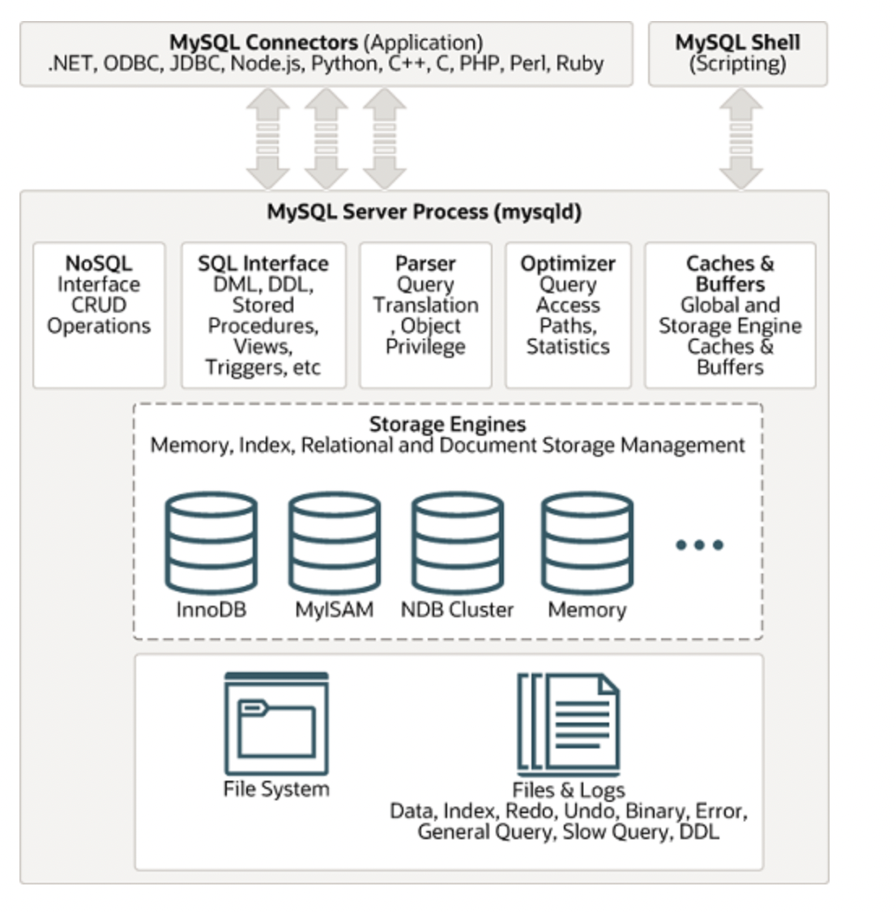

MySQL基本架构
MySQL 从整体来说还是 CS 架构，也就是由客户端（Client）和服务器端（mysqld）两大部分构成。
服务器端逻辑架构
服务器端大体可以分为两部分：Server 层和存储引擎层。

大体来说，MySQL 可以分为 Server 层和存储引擎层两部分。
- Server 层
-
包括连接器、查询缓存、分析器、优化器、执行器等，涵盖 MySQL 的大多数核 心服务功能，以及所有的内置函数(如日期、时间、数学和加密函数等)，所有跨存储引擎 的功能都在这一层实现，比如存储过程、触发器、视图等。
- 存储引擎层
-
负责数据的存储和提取。其架构模式是插件式的，支持 InnoDB、MyISAM、 Memory 等多个存储引擎。现在最常用的存储引擎是 InnoDB，它从 MySQL 5.5.5 版本开 始成为了默认存储引擎。
Component
- 连接器 (MySQL Connectors)
-
连接器负责跟客户端建立连接、获取权限、维持和管理连接。
- 查询缓存 (Caches & Buffers)
-
缓存查询结果。
- 分析器 (Parser)
-
对 SQL 语句做解析。先做"词法分析"，再做"语法分析"
-
词法分析
-
实别关键字、表名、字段名等
-
-
语法分析
-
判断你输入的这个 SQL 语句是否满足 MySQL 语法。
-
-
- 优化器 (Optimizer)
-
优化 SQL 语句的执行，判断要使用的索引、不同条件的执行的先后顺序等。
- 执行器 (NoSQL Interface 、SQL Interface)
-
-
先判断权限
-
执行一条 SQL 涉及的资源要大于 SQL 语句字面上。如触发器等。所以无法在执行之前判断权限。
-
-
如果有权限，就打开表继续执行。打开表的时候，执行器就会根据表的引擎定义，去使用这 个引擎提供的接口。
-